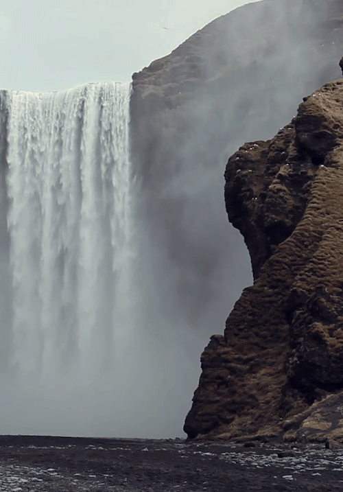
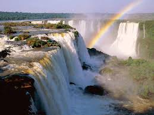
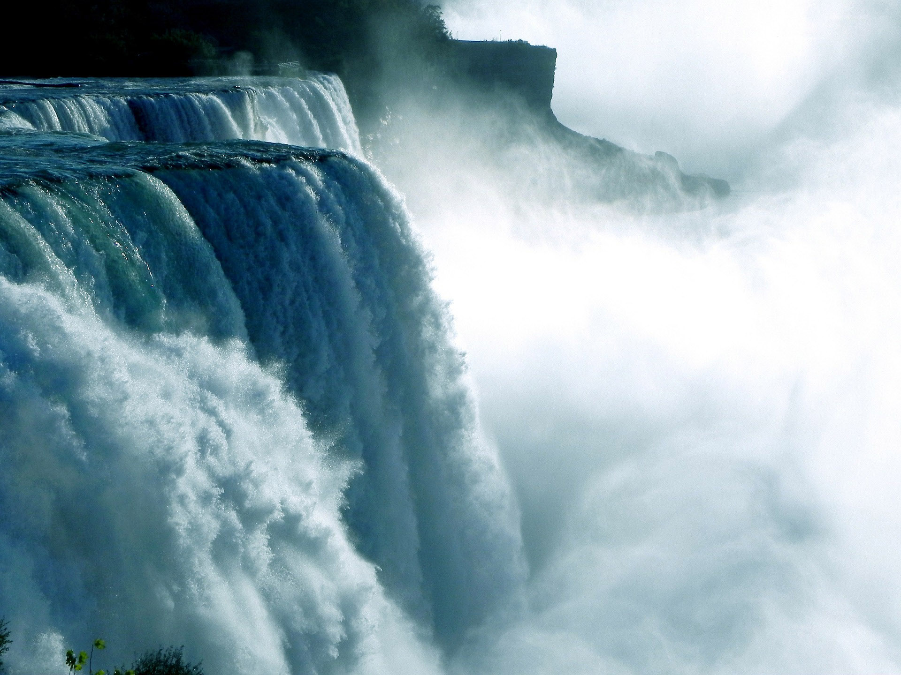
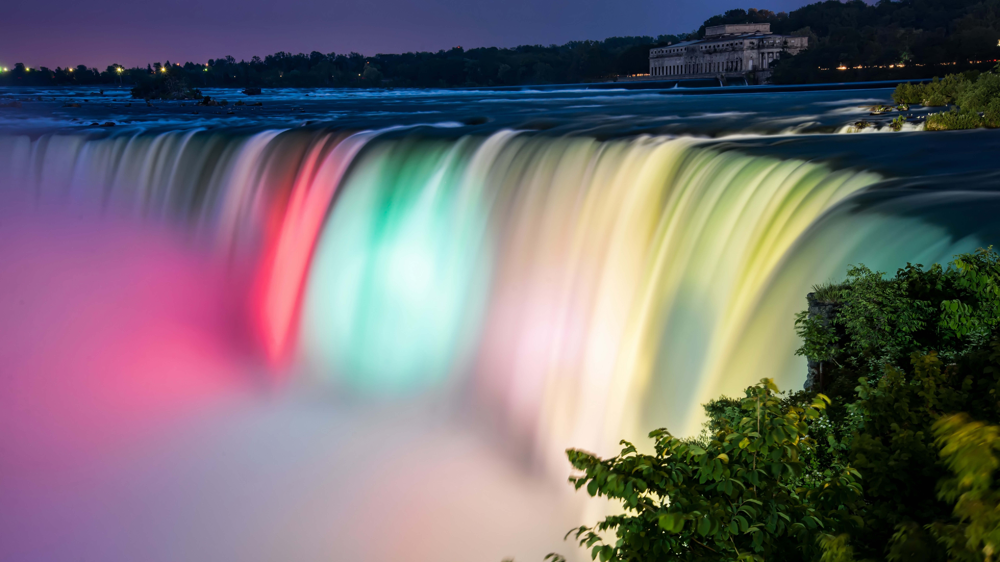

SITUATION, CARACTERISTIQUE ET HISTOIRE
Les chutes du Niagara1 ou chutes Niagara (toponyme officiel au Canada2,3), en anglais Niagara Falls, sont un ensemble de trois chutes d’eau situées sur la rivière Niagara qui relie le lac Érié au lac Ontario, dans l’est de l’Amérique du Nord, à la frontière entre le Canada et les États-Unis :
les « chutes du Fer-à-Cheval » (Horseshoe Falls) ou « chutes canadiennes » ;
les « chutes américaines » (American Falls) ;
les « chutes du Voile de la Mariée » (Bridal Veil Falls).
Bien qu’elles ne soient pas particulièrement hautes (57 m), les chutes du Niagara sont très larges. Avec un débit4 de plus de 2 800 m3/s, elles sont les chutes les plus puissantes d’Amérique du NordN 1 et parmi les plus connues5 à travers le monde.
Renommées pour leur beauté, les chutes du Niagara sont aussi une source immense d’énergie hydroélectrique et leur préservation est un défi écologique. Cette merveille naturelle, haut-lieu du tourisme depuis plus d’un siècle, est partagée par les villes jumelles de Niagara Falls (New York) aux États-Unis et Niagara Falls (Ontario) au Canada.

Les chutes du Niagara, ainsi que la rivière Niagara et les Grands Lacs nord-américains, sont apparues lors de la déglaciation qui a suivi la période glaciaire du Wisconsin, il y a environ 30 000 à 50 000 ans. Durant cette période, cette région était couverte par un énorme glacier continental (inlandsis laurentidien) qui en fluant vers le sud depuis le territoire canadien oriental a broyé et transporté roches et sols sur son parcours. Il a surcreusé des vallées, emplacements des futurs lacs, et en a barré d’autres par des moraines.
Pendant et après la fonte de l'inlandsis, les cours d’eau ont dû se frayer un chemin vers le nord-ouest, dans une topographie bouleversée, en incisant de nouveaux lits. La localisation actuelle du canal Welland correspondrait à une ancienne vallée. Les flots provenant des Grands Lacs en amont formèrent l’actuelle rivière Niagara. Celle-ci ne pouvant plus suivre son ancienne vallée remblayée emprunta alors un nouvel exutoire passant par un escarpement de regard nord qu'il éroda en gorges. Cet escarpement est un front de cuesta dû à un pendage monoclinal vers le sud6 et à la résistance de la formation géologique du Lockport7 (−415 millions d’années, Silurien), résistante à l'érosion, entre le lac Érié et le lac Ontario. La partie inférieure de l'escarpement, composée de roches marines largement antérieures à la dernière glaciation, a ainsi été soumise à l'érosion de la rivière Niagara. Trois principales formations géologiques sont à l'affleurement dans les gorges du Niagara.

La rivière nouvellement établie rencontra d'abord la résistante formation du Lockport, dont l’érosion se fit beaucoup plus lentement que celle des roches plus tendres situées en dessous. La photo aérienne montre clairement le chapeau rocheux composé de la roche dure de la formation de Lockport (Silurien moyen), en amont des rapides. Son dénivelé représente environ le tiers supérieur de la hauteur des chutes. Cette formation est composée d’une couche très dense et très dure de calcaire et de dolomite.
LES ACTIVITES
afflux maximum de visiteurs se fait en été, lorsque l'on peut admirer le spectacle des chutes du Niagara de jour comme en soirée. Du côté canadien, des projecteurs illuminent les deux côtés des chutes du crépuscule à minuit.
.jpg) Du côté américain, les chutes du Niagara peuvent être admirées des chemins de randonnées ou de la tour d'observation de Prospect Park (en). Près de là, les sentiers des Cavernes des Vents mènent les randonneurs par un escalier de quelque trois cents marches jusqu'à un point situé sous les chutes du Voile de la Mariée. Les Niagara Scenic Trolley (« Tramways pittoresques du Niagara ») offrent également des circuits guidés le long des chutes américaines.
Du côté américain, les chutes du Niagara peuvent être admirées des chemins de randonnées ou de la tour d'observation de Prospect Park (en). Près de là, les sentiers des Cavernes des Vents mènent les randonneurs par un escalier de quelque trois cents marches jusqu'à un point situé sous les chutes du Voile de la Mariée. Les Niagara Scenic Trolley (« Tramways pittoresques du Niagara ») offrent également des circuits guidés le long des chutes américaines.

- WildPlay’s MistRider Zipline to the Falls
- WildPlay Element Parks
- Guide de croisière
- Visite des chutes du Niagara du côté américain avec excursion en bateau Maid of the Mist
- Grand tour en hélicoptère au-dessus des chutes du Niagara
Opéré par WildPlay’s MistRider Zipline to the Falls
Annulation gratuite jusqu'à 24 heures à l'avance
Billet mobile accepté
Confirmation instantanée
Durée : 1 h

Nº 28 sur 55 Activités de plein air à Chutes du Niagara
Activités de plein air, Visites guidées, Parcs aventures aériens et Tyroliennes
Chutes du Niagara, Canada
+1 800-263-7073
Passagers : 3 114
Équipage : 1 185
Passagers/équipage : 2,63
Passagers/tonnage : 44
Mise en service : 2001
Opéré par Over The Falls Tours
Annulation gratuite jusqu'à 24 heures à l'avance
Langues proposées : anglais
Billet mobile accepté
Confirmation instantanée
Durée : 4 h 30 min
Prise en charge offerte
Opéré par National Helicopters - Niagara Falls Heli-Tours
Annulation gratuite jusqu'à 24 heures à l'avance
Langues proposées : français, anglais et 2 autres
Billet mobile accepté
Confirmation instantanée
Durée : 20 min
LES HOTELS ET RESTAURANTS
Autrefois destination très prisée par les Canadiens pour partir en voyage de noces ou passer des vacances en famille, la ville de Niagara Falls, dominée par les célèbres chutes de la rivière Niagara, est devenue un lieu idéal pour passer un séjour riche en activités. Bien sûr, les chutes du Niagara elles-mêmes constituent le principal attrait de la ville : en regardant les eaux écumeuses de la cataracte tomber à une vitesse vertigineuse, vous serez comme hypnotisé... Après avoir enfilé un poncho en plastique, vous monterez à bord du Maid of the Mist. Le bateau vous conduira si près des chutes qu'il ne faudra pas vous imaginer revenir de cette excursion au sec ! Puis allez vous promener sur l'artère principale de Clifton Hill où les activités touristiques exubérantes valent le coup d'œil et finissez la journée dans l'un des nombreux restaurants que compte le quartier.
- Prime Steakhouse Niagara Falls
- AG Inspired Cuisine
- Queen Charlotte Tea Room
- Massimo's Italian Fallsview Restaurant
- Tide and Vine Oyster House
Nº 1 sur 109 Américaine à Chutes du Niagara
Nº 1 sur 346 Restaurants à Chutes du Niagara

Nº 2 sur 203 Canadienne à Chutes du Niagara
Nº 2 sur 346 Restaurants à Chutes du Niagara
Nº 3 sur 346 Restaurants à Chutes du Niagara
Nº 1 sur 35 Italienne à Chutes du Niagara
Nº 4 sur 346 Restaurants à Chutes du Niagara

Nº 5 sur 346 Restaurants à Chutes du Niagara